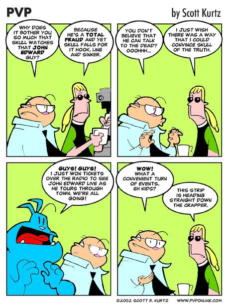
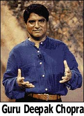
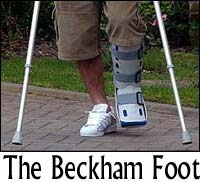

Scott Kurtz, creador de tiras cómicas, ha decidido hacer una semana adicional de sátiras al programa “Crossing Over”. Sip, mucho material ahí con el que trabajar. Aquí tenemos otra….
La semana pasada en Garabandal, España, como 200 fieles religiosos, daneses y flamencos, se reunieron a observar un gran milagro que les había sido prometido. Hay que destacar que este pueblo tiene una notoria reputación en el negocio de los milagros. En 1965, las autoridades allá (Garabandal es tan pequeño - 300 personas - que no tienen siquiera un doctor ni un pastor en el pueblo) habían declarado que según Conchita, una niña de la localidad quien, en la década de los años sesenta, afirmó haber hablado varias veces con La Virgen, un gran milagro ocurriría un jueves de ese año. Ningún milagro fue notado. Pero ahora se presenta la semana pasada, un tal profesor Rutton, presidente de los “Jueves blancos” una organización de seguidores-de-milagros, quien prometió que ese jueves, toda persona enferma en el área sería sanada, de forma fantástica, a las 8:30 de la noche. La hora vino y pasó sin incidentes. Hmmm.
Los creyentes estuvieron parados en una colina alta en las afueras del pueblo y allí esperaron que ocurriera el milagro que Rutton les había prometido tan sólo unas horas antes durante la misa. Sorprendido con el fracaso, Rutton les dijo, “Estoy honestamente equivocado. No lo puedo explicar. Mi reputación ha sido dañada”. En mi opinión, eso no es así. Todo el mundo elaborará sus razones, excusas, que nosotros los escépticos nunca hubiésemos podido inventar ni anticipar, serán desarrolladas y, aún así, el mismo grupo de personas estará de vuelta la próxima vez, con las mismas esperanzas. Siempre ha sido así. Las evidencias que lo desmienten jamás lograrán desalentar al verdadero creyente. Además, ningún pueblo renuncia a sus milagros tan fácilmente.
El profesor dice que no está preocupado por cualquier daño emocional posible que le haya causado a las personas enfermas quienes habían quedado devastadas por la decepción. “No puedes explicar algo que no entiendes”, dijo. Oh, claro que puede, Profesor. ¿Qué tal así? Un individuo guiado por su ego a quien le gusta pensar que puede comunicarse con alguna que otra divinidad pero que en realidad se auto-engaña. Hasta Conchita, tal vez un poco molesta por la incursión en su territorio, opinó que Rutton era un mentiroso. Pero Conchita, ¡tu milagro tampoco fue un gran éxito!
La expresión “un idiota pomposo” me viene a la mente aquí.
¡Potenciales infractores de patentes!
El lector Daniel J. Hanson, al escuchar que teníamos cierto interés aquí por las patentes ridículas que son emitidas por ese grupo de tontos en Washington, sugirió que fuera a http://www.uspto.gov y buscara el número 6368227. Esperaba algo necio pero la Oficina de Patentes de Estados Unidos ha excedido ahora todas mis expectativas. Cuando recientemente emitieron una patente para “tostada” y otra de una variedad de los emparedados-de-mantequilla-de-maní-con-mermelada, me sorprendí lo suficiente, pero ésta es La Ganadora en el Campo de la Estupidez, definitivamente. No puedo, ni en mis imaginaciones más extensas (y soy un adepto a este arte, les aseguro) encontrar cualquier forma de conseguir alguna ganancia con 6368227, a menos que el objetivo sea cerrar todos los parques infantiles sobre el globo… mírenlo, pero siéntense cuando lo lean.

El lector Jim Kutz llamó nuestra atención sobre estas noticias, sumamente alarmantes. Un muy respetado hospital, en Savannah, Georgia, Memorial Health University Medical Center, ha dado un salto dentro de las arenas movedizas de la magufería y con mucho estilo. El hospital se ha unido con el doctor Deepak Chopra, autor de “best sellers” y gurú en salud holística, para crear un centro donde los pacientes pueden sacarle provecho a lo mejor de la medicina medieval. Por ejemplo, pueden suscribirse en algo llamado “Shirodhara”, en donde aceite de sésamo caliente se deja caer en gotitas, lentamente, sobre la frente del paciente. ¡Hey! ¡Seguro que eso lo resuelve todo!
En marzo del año pasado, otro hospital en Savannah, de la competencia, abrió un “Centro para el bienestar”, donde la gente pidió ser tratada con aromaterapia, donde cosas que huelen bien supuestamente los curan. Otro gigantesco paso hacia atrás, ¡hacia el siglo XIII! Es evidente que los hospitales buscando pacientes que paguen, y con más competencia en el mercado, han estado aumentando estas ofertas de “medicina alternativa” para sus pacientes y este retraso para la ciencia médica está obviamente inspirado por motivos financieros. Aquí, en Fort Lauderdale, Florida, tenermos el Centro para el arte de sanar”, asociado con el Sistema Hospitalario General Broward excelente y de muy buena reputación, por lo que estamos acostumbrados a “tocar para sanar”, hipnosis, Feng Shui, “balanceo de energía”, “imágenes de auto-sanación” y maguferías con el “mandala”. Actualmente, nos dice la Asociación de Hospitales Americanos, el 15.5% de todos los hospitales en USA ofrecen estas novedosas actividades y, además, hospitales de todos los tamaños continúan inaugurando centros de “medicina alternativa o complementaria”. Para citar a la AHA, “con un mercado que ha sido estimado en unos 27 mil millones de dólares y con clientes adinerados quienes por lo general pagan al contado por estos servicios, los hospitales están ansiosos de intentar el negocio de la medicina alternativa. Algunos ven esta incursión como una extensión de su misión, pero ha sido el dinero que ha capturado el interés”. Los programas son ofrecidos tanto por los hospitales como por los centros académicos como el Hospital Israel Beth y el Centro de Cáncer Memorial Sloan Kettering en Nueva York, Duke y Stanford, que ofrecen tratamientos que consisten en “terapias para relajarse”, “acupuntura”, “terapia de polaridad” - una sesión de una hora de duración en donde manos son puestas sobre el cuerpo para desbloquear la energía - retroalimentación, cirugía facial china - una técnica que usa la acupresión para ayudar a eliminar las arrugas y a aliviar los dolores de cabeza y, la “sanación remota” - el envío de oraciones terapéuticas hacia alguien enfermo que está lejos.
El objetivo del Memorial Savannah al saltar a la magufería es atraer a clientes adinerados del Eastern Seaboard, además de atraer a los turistas y a los ricos ya retirados. Al afiliarse con Chopra, el Centro está capitalizando el nombre más conocido dentro de la medicina ayurvedic (medieval). “Lo que nos ofrece el doctor Chopra es una marca inmediata”, dice el doctor Regan, vicepresidente de planeación, estrategia y mercadeo. Pero agregó, “el nombre de Chopra trae credibilidad instantánea o ausencia inmediata de ella, depende de qué lado estás”.
El hospital espera invertir como 250,000 dólares en el centro por los primeros tres años, incluyendo la licencia del nombre de Chopra - ¡para nada un respaldo barato!- y el entrenamiento de media docena de los miembros del equipo de trabajo para que aprendan sus métodos.
Esto es una movida vergonzosa, desgraciada, carente de ética o de productividad, realizada por un centro médico que está encargado de proveer con asistencia genuina y servicios a sus clientes y que ahora ha decidido desilusionarlos y engañarlos al servirles magufería atractiva y cara. Pero el dinero al final lo va a conseguir el hospital y las funerarias que se encargarán de manejar los servicios de aquellos que confiaron en el hospital.
Como ahora están repitiendo los programas especiales para televisión de David Blaine, he estado recibiendo mucho correo con peticiones para que explique su truco de “levitación”. Este consiste en que Baline parece elevarse en el aire unas cuantas pulgadas, mientras está afuera, al aire libre y rodeado de personas que se encuentran cerca de él. Ahora bien, como ya lo saben mis lectores regulares, no voy a revelar jamás los secretos de los grandes intérpretes legítimos del arte de la magia. A pesar de que David y yo mantuvimos una relación amistosa una vez, lamento anunciarles que ahora él se ha ido hacia “el lado oscuro” ya que ha firmado una declaración afirmando que los poderes de Uri Geller son legítimos. Geller tiene una forma especial de extraer declaraciones como esa de gente ingenua y, de alguna forma, David se ha dejado engatusar para que realice tal obra.
Pero David Blaine, por supuesto, tenía que haber reaccionado. Su método básico para realizar sus impresionantes adivinamientos de palabras, por ejemplo, está basado en las mismas técnicas utilizadas por el señor Geller. Pero, podemos acreditarle el hecho de que nunca ha proclamado tener genuinos poderes psíquicos. Por qué entonces ha decidio apoyar a Geller es algo que sólo podemos adivinar. En mi opinión, ha sido un mal cambio para su carrera, pero ha sido su decisión.
Les daré algunas informaciones sobre la demostración de “levitación” de Blaine. Primero, es conocida en el mundo de la magia como el “movimiento de Balducci” o la “levitación de Balducci”. Un gran y bien conocido contribuyente de la literatura mágica, Ed Balducci nunca dijo haber originado el truco pero sí que ayudó a que se popularizara. Segundo, en una interpretación de calle, sólo unas cuantas personas (¡o una cámara!) correctamente localizadas, pueden disfrutar de este efecto. Los demás que no estén bien posicionados, ven claramente cómo se logra producir el truco. Luego, en la presentación televisiva, a menudo mucha “edición creativa” es usada…
Si en realidad quieres saber la historia completa, quizás puedas sobre-informarte un poco en http://www.geocities.com/Broadway/Stage/7308/balducci.html pero confío que seguirán disfrutando el excelente trabajo de David Blaine como mago. Sus decisiones fuera del teatro (¿afuera en la calle?) son, por supuesto, asuntos que se los dejo a él.
¿Necesito decirlo? Geller está en eso de nuevo. No se da por vencido. Pueden mirar en esta página de fútbol británica en www.football365.com para que vean su más reciente idea para mejorar las actuaciones del equipo Reading. Cuando Geller es contratado por un equipo de fútbol para ayudarlo a incrementar sus probabilidades de ganar, las personas sabias apuestan al otro equipo de una vez. Ya hemos discutido esto antes en esta página. Lo último:
A pesar de que el “incidente del cristal enterrado en la ciudad Exeter”, mencionado la semana pasada, sí sucedió, parece palidecer en significancia comparado con las payasadas del metido bufón en el estadio Madejski. Este absoluto idiota avergüenza regularmente a las multitudes de Reading al forzarlos a que levanten unas cartas de colores sin ningún efecto obvio. Es el Dom alegre del dominio de celebridades falsas, Geller está ahora gastando la mayor parte de su tiempo ingeniando fraudes cada vez más elaborados que les muestra a los petrificados fanáticos de Reading.
Dom el alegre es un payaso cómico y extraño que hace programas para niños en la televisión británica. En caso de que no lo sepan.
El capitán David Beckham es una estrella de fútbol quien sufrió una fractura en su pierna izquierda cuando arremetieron contra él recientemente durante un juego. Ha habido mucha ansiedad sobre si podrá recuperarse o no para jugar en la primera Copa Mundial de su equipo el 2 de junio. ¿Adivinen quién se ofreció a acelerar la velocidad del proceso de sanación? Sip. Geller el doblador de cucharas ha propuesto usar la voluntad de la nación; él quiere que los televidentes toquen las pantallas de sus televisores y se concentren en enmendar el hueso roto de la estrella y que hagan esto la próxima vez que él salga en televisión. Vamos a considerar por un momento los esfuerzos previos de Geller para asistir a otros futbolistas, le recomiendo a Beckham que se resista a estas ofertas.
En el diario de la Sociedad Real de Medicina aparece este artículo, que pregunta, ¿pueden los homeópatas detectar medicinas homeopáticas con radiestesia?” Una prueba aleatoria, de doble-ciego y controlada con placebos, es descrita, en donde las luces líderes del firmamento homeopático del Hospital Real de Homeopatía en Londres y el Instituto de la Medicina Psiónica, estuvieron involucrados. Decía:
La radiestesia es un método para resolver problemas que utiliza un automatismo con motor amplificado a través de un péndulo o algún instrumento similar. En un contexto homeopático es usado como ayuda en la prescripción y como una herramienta para identificar miasma o cargas tóxicas. Una prueba aleatoria y en doble-ciego fue conducida para determinar si seis homeópatas radiestesistas eran capaces de distinguir entre Bryonia con una potencia de 12c y el placebo, utilizando sólo la radiestesia.
La medicina homeopática Bryonia fue identificada correctamente el 48.1% de los pares de botellas…Estos resultados, negativos en su totalidad, añade más dudas acerca de si el uso de la radiestesia en este contexto puede originar información objetiva.
Como un 50% es esperado en estas pruebas sólo por pura casualidad.
La semana pasada, la policía en Bavaria y la vecina Austria, fueron inundadas con llamadas de personas preocupadas en la comunidad quienes reportaron haber visto como el cielo “se encendía como si fuera de día” y luego dijeron haber escuchado una gran explosión. La esposa de un agricultor en Friesing, Bavaria, dijo haber observado relámpagos brillantes de luz y también ruidos fuertes cuando iba a poner a su hija en la cama, pero ella dice que pensó que eran los jóvenes de la localidad que estaban causando todo el desorden. El ministro de interior de Bavaria dijo que cientos de personas preocupadas llamaron para reportar OVNIS, descritos como una serie de relámpagos que parecían rayos.
Bueno, sí que había algo que reportar, y no era gas de pantano. Los reportes de OVNIS fueron resueltos al descubrir un meteorito “fresco”. La esposa del campesino de Bavaria, quien escuchó los ruidos tarde en la noche, encontró al otro día un cráter de tres pies de ancho en un pedazo de tierra donde tenía sus vegetales. Un meteorito más grande que una pelota de tennis estaba en el fondo. El Instituto de Geología de Munich estima que el meteorito - uno de la variedad de “piedra” - pesaba más de 100 kilos (220 libras) antes de que entrara en la atmósfera (como un meteoro) a una velocidad de casi 200,000 kilómetros por hora (125,000 millas por hora) - o 56 kilómetros por segundo (35 m.p.s).
Aquí tenemos los deshechos que quedaron de un gran pedazo de piedra que cayó del espacio profundo después de tal vez millones de años de pasear por ahí, y todo para venir a parar en un jardín alemán de vegetales. Al sostener tal objeto ¿puede el romance, de esa increible historia e impresionante viaje, no llegar hasta tí? Desde la eternidad a tu mano, todo desde aquel comienzo desconocido, un viaje que fue empezado…Bueno, ustedes captan la idea. ¿Quién necesita un OVNI?
Sólo lean esto para que prueben un poco de lo mejor de las pseudociencias. Es parte de una entrevista con un personaje que proclama otra variedad más de agua “sintonizada” y sus atributos milagrosos.
RB: Cuando comemos, la comida que comemos en realidad la expiramos al otro día en forma de dióxido de carbono. La comida que no absorbemos la depositamos en el inodoro, la comida que absorbemos se convierte en dióxido de carbono en nuestro organismo. Ahora bien, el dióxido de carbono nos hace daño cuando atraviesa nuestro cuerpo - en la enfermedad de Alzheimer, en la osteoartritis y hasta en la osteoporosis está esta sustancia presente. Lo que estamos haciendo con esta agua es….hay bicarbonato de magnesio. El bicarbonato es llevado a las células y el dióxido dentro de las células muere. No es agua clara y no sé si será posible que lo vean pero tiene pedacitos dentro [Muestra un contenedor de agua]. Necesitas moverlo antes de beberlo. Estoy tratando de mostrarle a la gente en sus casas estos pedacitos. Si estás mirando, observa el fondo, quizás puedas verlos, son carbonatos. Cuando los movemos se vuelven bicarbonatos otra vez - tenemos que preparar el producto antes de que lo beban.
Entrevistador: ¿Cuánto hay que beber antes de sentir los efectos?
RB: No estamos diciendo que tenemos pruebas clínicas. Existe evidencia médica bastante fuerte y publicada en los mejores diarios científicos que aseguran que los bicarbonatos tienen estos efectos - El Diario de Medicina de New England, por ejemplo. Como algo preventivo sugerimos tomar como dos botellas al día, como algo preventivo por lo menos. Si la gente tienen enfermedades y quiere probarlo a ver si les funciona, para ellos entonces de dos a tres botellas al día..
Entrevistador: ¿Lo toma con el consejo de su médico?
RB: Es tan sólo agua. Le sugiero a las personas que están bajo medicamentos que no lo tome antes de ver a su doctor por si el doctor no quiere que beba mucha agua. Siempre es mejor consultar a su médico si está enfermo, siempre. Pero si tomas agua, y las autoridades en la nutrición nos dicen que tomemos de uno a tres litros diarios, quizás sea esta agua. Hemos visto los beneficios para gente con una variedad de enfermedades. Una vez te han diagnosticado la enfermedad clínica del Alzheimer, parte del cerebro ha degenerado y ya parte de eso no volverá a ser igual. Estamos promocionando esta agua para prevenir estos tipos de enfermedades que tienen concentraciones de carbono. Como prevención está bien…No prometo nada. Tienen que intentarlo y ver cómo les va.
Entrevistador: ¿Cuánto cuesta una botella?
RB: Cuesta 30 dólares el paquete donde vienen 24 botellas. Somos sólo personas que estamos tratando de que esto salga a la calle, así que es un poco más de un dólar la botella…
Entrevistador: Creo que me ha convencido. Voy a probarla.
El entrevistado era el doctor Russel Beckett, PhD., quien será tomado en serio por los no-informados. A cualquier estudiante que diga una estupidez como esa le ponen una baja nota en la presentación final, pero los que tienen PhDs parece que pueden decir cualquier cosa…
Debo decir que he sido más que afortunado con creadores de tiras cómicas y autores para que me den permiso para publicar su trabajo aquí en nuestra página. Scott Adams, Scott Kutz, Richard Dawkins, Dorion Sagan y muchos otros y, ahora, Mark Evanier de www.povonline.com (¡vayan y miren!) Han accedido felizmente a concedernos este favor. Mark me ha puesto en contacto de nuevo con Sergio Aragonés, cuya fama proviene de su participación en la revista Mad y que, luego de anunciar que ha sido un seguidor de nuestro site desde hace mucho tiempo, ha sugerido que utilicemos el siguiente artículo, que escribió en noviembre de 1995 y que tiene que ver con un “psíquico” llamado Peter Hurkos, de quien hemos hablado antes en la página. Aceptamos con gran entusiasmo. Debo comentar que, como admite Mark, el intercambio actual que se da aquí entre la estrella y Peter Hurkos ha sido aproximado pero por mi experiencia les puedo decir que no está muy lejos de una actuación típica de Hurkos. Les pido que acepten el consejo de Mark de hacer una lectura de dos personas aquí…
Hace muchos años, cuando era aprendiz en el negocio de los libros cómicos con el gran Jack Kirby, él y yo co-escribimos una historia llamada “El psíquico sabueso”…La historia estaba inspirada por algunos artículos que Jack había leído sobre un caballero llamado Peter Hurkos, quien muchas veces era señalado como el “psíquico detective”. El relato típico de Hurkos siempre incluía a policías sorprendidos, un crimen que no podía ser resuelto o un artículo que continuaba perdido; luego él era llamado para que resolviera el caso y, vía sus poderes psíquicos, anunciaba dónde se encontraban las personas o los artículos desaparecidos o lo que sea.
Si crees en algo como los poderes psíquicos, Hurkos era un ejemplo vivo, pero si no creías en ellos, las historias de sus obras impresionantes te dejaban pensando si quizás no existiría algo en este jazz psíquico.
Para ese entonces, yo también escribía sobre ciencia ficción y horror, para una de esas revistas tabloides llamada El Monstruo Times. Poco después de que la historia para esta revista fuera escrita, recibí una llamada de último minuto del editor de dicho tabloide, pidiéndome que sustituyera a uno de sus corresponsales para esa noche en una premier de una película en Los Angeles. Yo le dije que sí y, tres horas más tarde, me encontraba recogiendo mis credenciales para mi debut en el mundo de la gala con una cinta de explotación vulgar llamada Flesh Gordon.
Toda la noche fue un desastre, en parte porque encontré que la película era tan entretenida como observar cómo envejece el pudín de tapioca que se encoge y ya no toca el borde del plato; también por una increíble cantidad de cámaras, fanáticos y gente muy mal vestida; y además porque alguien tuvo la brillante idea de que los invitados tipo V.I.P. y la prensa tenían que estar sentados en las primeras tres filas. (Esta era el tipo de película que es mejor mirar desde atrás, preferiblemente mirando hacia el otro lado de la pantalla).
Me encontré sentado entre las destacadas celebridades. A mi izquierda estaba una joven dama cuyo vestido tenía menos material que Andrew Dice Clay. Estuvo todo el tiempo proclamando sus créditos, en voz alta, en películas con restricción X y apuntando a otros de los asistentes con los que ella, um, actuó. Hice una nota mental, probablemente ella sería una buena paciente para un transplante de corazón ya que su cuerpo nunca había rechazado un órgano.
Luego me volteé hacia la derecha y encontré sentado allí a una estrella de algo de magnitud: Larry “Buster” Crabbe, estrella de varias películas y series del pasado, incluyendo los filmes originales del Flash original (quien no debe ser confundido con Flesh) Gordon. Hasta este día, aún no se con certeza cómo lograron que el señor Crabbe asistiera a este evento pero, juzgando por su actitud y los comentarios que más o menos susurró, diría que, en algún lado, alguien tenía armas de fuego apuntadas hacia su madre.
Durante la película completa, él estuvo sentado, más rígido que en ninguna de sus actuaciones, musitando lo ofensivo que encontraba todo lo que salía en la pantalla, en todos los sentidos en que una persona pudiese sentirse ofendido: moralmente, artísticamente, estéticamente…y hasta financieramente. Nuestra mutua dificultad se volvió aún más insoportable por varias ceremonias pre-filme. La mayoría eran discursillos aburridos por gente aburrida con conexiones débiles con esta película aburrida, pero uno de los intercambios fue tan maravilloso, tan histérico que hizo que todo el evento valiera la pena, por lo menos para mí.
Todavía soy capaz de sonreírme o de reírme un poquito al recordar el momento. En vez de tratar de recrearlo aquí para ustedes, voy a pedirles su ayuda y necesitarán a un amigo para que los ayude con esto. Juntos, nosotros tres - tú, yo y tu amigo - vamos a copiar una de las cosas más divertidas que jamás haya visto en mi vida. Si hacen bien su parte sentirán como si hubiesen estado ahí y experimentarán parte de la exhuberante alegría que sentí en ese momento…
Okay. Ahora tengo que preparar la escena para tu actuación:
Estamos en un teatro lleno de personas y con poca ventilación en Westwood, California. La gente está empaquetada dentro de este lugar como si se tratara de una escena multitudinaria de Sergio Aragonés. Parece como si hubiésemos estado aquí por horas y aún no hay señales de que van a presentar la bendita película. (Y mejor que se apresuren porque la actriz a mi izquierda ya necesita su lubricación de silicón de los seis meses).
Nos gustaría salir afuera pero se trata de una premiere y la mayoría de los presentes tienen algo invertido en la película por lo que tienen que verla o asegurarse de que los demás la vean. Así que nadie quiere salirse, aún cuando no ha comenzado. Estamos rezando que el M.C. va a decir, “ok, hora de ver la película”, pero en vez de ésto, continúa anunciando más discursos, otra dedicatoria, otra cosa para mantenernos aquí hasta que la película sea lanzada en disco de láser. (Al momento de este incidente, los discos de láser aún no habían sido inventados…pero hubieron momentos cuando pensé que lo inventarían antes de que yo viera el cielo otra vez).
Finalmente, justo cuando todos pensábamos que él estaba a punto de agradecer a la audiencia por haber venido y dar la orden de rodar la película, proclama que habrá una lectura psíquica cortesía del gran Detective de Psíquicos, el señor Peter Hurkos.
Silencio en la casa.
Y no porque estén todos maravillados con el anuncio.
Las estrellas del filme son invitadas a pasar por el escenario para conocer y ser “leídos” por Peter Hurkos. También llamaron al escenario al legendario, ganador de medallas y aquel que desea-estar-en-cualquier-lugar-menos-ahí, Buster Crabbe. Peter Hurkos es un hombre pequeño y corpulento, cuyas habilidades psíquicas, cualesquiera que sean, no se extienden, evidentemente, al conocimiento de que su peluca luce como un Lhasa Apso. Hace una lectura rápida a las estrellas de Flesh Gordon y luego proclama que serán grandes estrellas y que esta película será un gran éxito. Estas declaraciones deben contar como motivos suficientes para que Dionne Warwick le retire la Licencia de psíquico. Entonces Hurkos viene y le pone su atención a Buster Crabbe. Le pide que lo deje sostener un objeto personal del señor Crabbe y Buster casi peleando le da su billetera. Hurkos comienza a sobarla mientras Crabbe le echa un ojo para cerciorarse de que no se está quedando con nada de su contenido.
Para nuestra dramatización (y no estoy bromeando; búscate un amigo y lean esto en voz alta. Los impactará cinco veces más si lo hacen), tu serás Peter Hurkos y tu amigo tendrá el papel de Buster Crabbe. Tu amigo tiene la parte fácil. Hasta su última línea, todo lo que tiene que hacer es seguir diciendo “no”. En la escena, él es el único que dice “no” a todo y nisiquiera lo tiene que hacer con sentimiento o profundidad. Recuerda, está haciendo el personaje de Buster Crabbe. El señor Crabbe era un hombre buenmozo, un atleta formidable y, probablemente, una persona muy simpática pero Lawrence Olivier no se sentía amenazado cuando el señor Crabbe leía sus líneas. De hecho, ayudaría con el efecto global si tu amigo dice sus líneas con tan pocas muestras de emoción como le sea posible.
Tú tienes la parte más dura, pero es obvio que tienes la mayor parte del talento. Tú haces el papel de Peter Hurkos y la parte más importante de tu actuación (Mira, Ma…soy director) es que debes ser absolutamente serio y creer, intensamente, que todo lo que dices es verdad. Si además puedes agregarle un ligero acento danés, mejor, pero no es obligatorio. Estás en escena frente a cientos de personas y estás masajeando la billetera de Crabbe. En lo que sigue, tienes la primera línea y tu amigo tiene la segunda, desde ahí van alternando.
Okay, aquí vamos….
Veo…Veo que estás contemplando un cambio grande en tu residencia…te mudas a otra casa…
No.
Estás pensando en un cambio dentro de la residencia…remodelar el hogar…
No.
Estás pensando en cambiar el garage…
No.
Tienes en tu garage un Buick Skylark rojo modelo1966…
No.
Tienes en tu garage un Buick Skylark rojo…
No.
Tienes en tu garage un Buick rojo…
No.
Tienes en tu garage un carro rojo…
No.
Tienes un carro en tu garage…
No.
Estás pensando en comprar un carro…
No.
Estás pensando en comprarte un abrigo…
No.
Estás pensando en comprarte un gato… [*]
No.
Ya tienes un gato…
No.
Tienes un perro…un Dóberman Pinscher…
No.
Tienes un Pastor Alemán…
No.
Tienes un Cocker Spaniel…
No.
Tienes un Chihuahua…
No.
Una vez fuiste mordido por un Chihuahua…
No.
Fuiste mordido por un perro…
No.
Una vez tuviste un perro…
No.
Tus hijos tenían un perro…
No.
Tus niños quieren un perro…
No.
Tus niños querían un perro…
No.
Tienes hijos.
No.
Quieres tener hijos…
No.
Te gustan los niños.
No.
Has hablado con algunos niños…
Bueno…sí.
Ah, claro, ¡lo sabía!
Fue algo así, más o menos. Ya cuando iban por la mitad yo estaba debajo de los asientos riéndome tan fuerte que pensé que se me explotaría el bazo. Todo lo que recuerdo es que Hurkos intentó adivinar más de ocho mil veces y cada vez generalizaba más y más hasta que al final una conectó. Y cuando finalmente pegó una actuó tan orgulloso, como si aquello comprobara sus habilidades psíquicas.
Me recordó a esa persona, que estaba en todos las fiestas de los años sesenta, a quien le encantaba adivinar a cuál signo del zodíaco pertenecías y quien luego de adivinarlo en el décimo u onceavo intento decía, Sí, siempre consigo saberlo. (Si eres muy joven para haber ido a una fiesta en esa década, confía en mí: esta persona estaba en todas ellas. Adivinar tu signo era mucho más popular que el guacamole; no creo en ninguno de los tres pero, hey, si te funciona…
Ni siquiera quiero burlarme del señor Hurkos, que en paz descanse. Aunque pudieras convencerme de que existen poderes psíquicos, aún dudaría que aquellos que dicen poseerlo lo tengan y que lo puedan usar cuando ellos quieran. Quizás, lejos de las vibraciones de una audiencia hostil y atletas Olímpicos, el señor Hurkos es capaz de encontrar a un niño desaparecido, el arma perdida de un crimen o hasta a Michael Dukakis. Pero esa noche, en el estreno, él no podía leer ni uno de los libros del Dr. Seuss.
Regresé donde Jack Kirby quien sí cree en poderes psíquicos - o quizás es más preciso decir que él quería creer. Le dije todo sobre la noche y reinterpreté para él el intercambio entre Hurkos y Crabbe. También le dije lo que fue ver la película, una experiencia que comparé con un tratamiento de canal realizado con el Popeil de bolsillo del pescador.
Jack tuvo el mejor comentario sobre todo el asunto. Siempre era así. Dijo, me ha desencantado escuchar eso sobre Peter Hurkos. Creo que prueba que sus poderes psíquicos no estaban funcionando. Sí, le dije. Si fuera de verdad psíquico sabría algo sobre Buster Crabbe. Buster Crabbe no importa, respondió Jack. Si Hurkos fuera psíquico, hubiese sabido lo suficiente como para mantenerse alejado de la película.
Gracias, Mark. Estoy que no veo por ponerme en contacto de nuevo con Sergio. Estos creadores de tiras cómicas son gente estupenda….
Para conocer sobre los “progresos” más recientes en el arte de la radiestesia y sobre la fortuna que pagamos para estos estudios con el dinero de los impuestos de los estadounidenses, vayan a http://www.time.com/time/columnist/jaroff/article/0,9565,231110,00.html y lean.
Sí, la semana pasada deletreé mal “Aerosmith” pues era el grupo “N* Sync” el que quiere enviar a uno de sus integrantes al espacio. Suspiro. No le digan nada a Alice Cooper, por favor….

Comentarios
Comments powered by Disqus